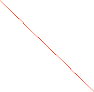
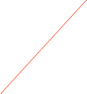

CAEN V862


Set the VME Address
Threshold values for each channel
The Model V862 is a 1-unit wide VME 6U module housing 32 Charge-to-Digital Conversion channels with current integrating negative inputs. Each channel has an independent gate input (GATE i) logically ANDed with a COMMON GATE input; the input charge on the i-th channel is converted to a voltage level by a QAC (Charge to Amplitude Conversion) section when both the GATE i and COMMON GATE signal are active. Input range is 0 ÷ 400 pC.
The integral non linearity is ±0.1% of full scale range (FSR), measured from 2% to 97% of FSR; the differential non linearity is ±1.5% of FSR, measured from 3% to 100% of FSR.
The ADCs use a sliding scale technique to reduce the differential non-linearity.
The outputs of the QAC sections are multiplexed and subsequently converted by two fast 12-bit ADCs (5.7 µs for 32 channels).
The Mod. V862 offers a 32 event buffer memory; programmable zero suppression and trigger counter complete the features of the unit. The module works in A24/A32 mode. The data transfer occurs in D16, D32, BLT32, MBLT64 or CBLT32/CBLT64 mode. The unit also supports the Multicast commands.
The board has a special circuitry that allows it to be removed from and inserted in a powered crate without switching the crate off.
The dialog has a page for basic operations and one for thresholds.
Please refer to the manual for more details.
V862 Data Record format
The data records for the CAEN cards is exactly as produced by the cards with the addition of a header that 'wraps' the data for ORCA. It is a variable length record. Only the long form is used. The format is:
xxxx xxxx xxxx xxxx xxxx xxxx xxxx xxxx
^^^^ ^^^^ ^^^^ ^^-----------------------Object ID (from header)
-----------------^^ ^^^^ ^^^^ ^^^^ ^^^^-n longs + 2
xxxx xxxx xxxx xxxx xxxx xxxx xxxx xxxx
^^^^ ^^^^-------------------------------spare
----------^^^^--------------------------crate
---------------^^^^---------------------card
--------------------^^^^ ^^^^ ^^^^ ^^^^-spare
n longs of data follow immediately. The format
is as described in the card's documentation.

Load the current set of thresholds into hardware



The write value and the channel to use

Operation to do on the selected register using the current set of values
Extra Info about the selected register

Read the values that are currently in hardware

The card’s register list. the current operation will be applied to he selected register. See the documentation that came with the card for more information on each register